Smart Road Damage Detection & Municipal Repair Management
CivicSight connects citizens and municipal teams: citizens report road hazards with photos and GPS locations, and municipal staff review, prioritize, verify, and resolve them.

Detection & Response WorkflowThe CivicSight Workflow
From initial citizen discovery to final road repair verification in 7 seamless stages.
Report
Citizens photograph road hazards and upload location data seamlessly from any mobile browser.
Detect
YOLO-powered deep learning models classify road defects across D00, D10, D20, and D40 categories.
Prioritize
Automatic priority scoring ranks high-severity damage first for municipal review.
Verify
Municipal engineers validate damage assessments and estimate repair scopes efficiently.
Assign
Each report gets a geolocation marker and work order tracked through the municipal workflow.
Repair
Field crews conduct asphalt repair, pothole filling, or resurfacing operations.
Close
Post-repair photos confirm resolution, updating citizens and closing the maintenance cycle.
Modular Architecture
Built for citizen transparency and municipal operations efficiency.
Citizen Damage Reporting
An intuitive interface for quick road hazard submission with photo upload, detailed descriptions, and map-based location pinpointing with GPS support.
Municipal Operations Center
Interactive Leaflet map with severity-colored markers, status and priority triage filters, in-place report verification, and AI confidence review.